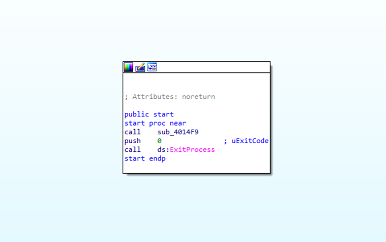
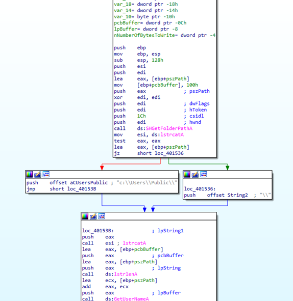
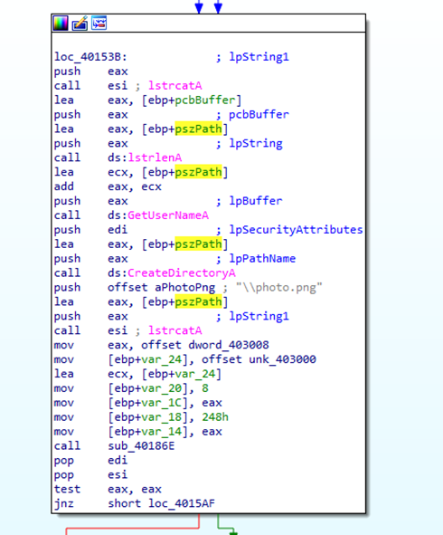
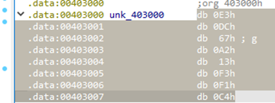
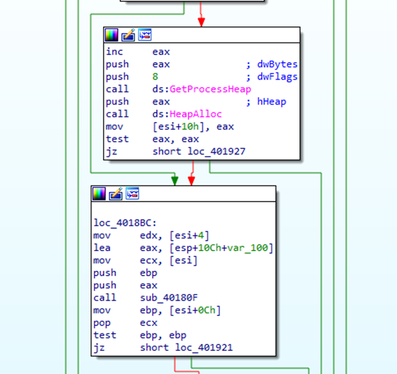
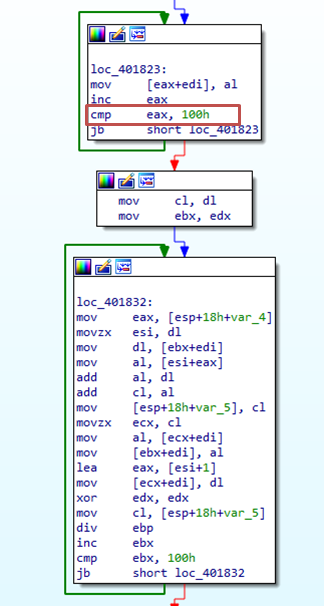
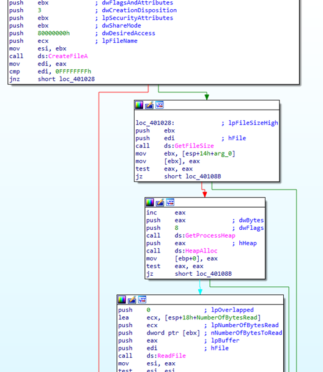
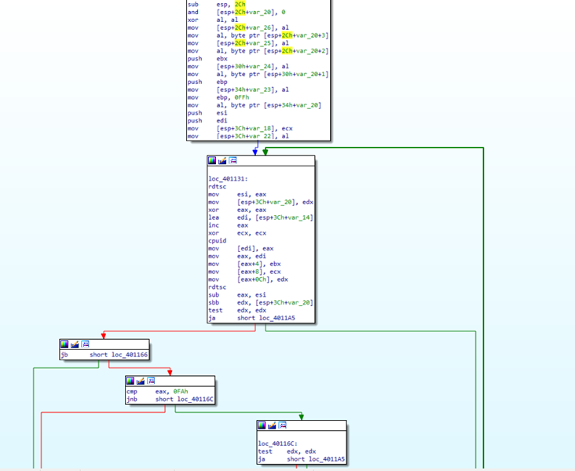
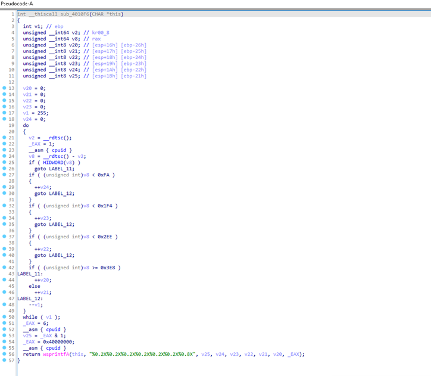
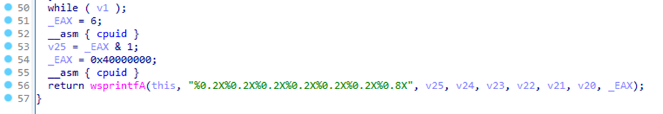

Analyzing IcedID Loader - Zero2Automated
Introduction
In this post, I will examine the sample provided in the Zero2Automated: Advanced Malware Analysis course, which is introduced when we reach the second chapter of the course, specifically the second stage. That said, let's get started.
Static Analysis
Packing Detection
An initial analysis of the sample with PE Studio makes it possible to extract several interesting things.
One of the first aspects to notice is that the entropy value is relatively high, suggesting some level of data compression or obfuscation,
but not high enough to clearly indicate heavy packing or encryption.

In the debug section, a file path is present that serves as a strong indicator that the sample is likely packed.
The path appears to be meaningless and does not correspond to a valid location, suggesting that it is merely junk data.

In the library section, the sample loads only two libraries. This limited set of imported libraries is another indicator that the binary is likely packed.

In the strings section, there are strange strings and this is another indicator of packing.

Continuing with the strings section, several compiler-related strings are present.
Their presence, combined with the other observations, serves as an additional indicator that the sample is packed.

Unpacking
The sample is opened in xdbg to perform unpacking, with the goal of identifying the tail jump that transfers execution to the Original Entry Point (OEP) or, more generally,
to locate the unpacked executable code in memory. Breakpoints are set on VirtualAlloc, VirtualProtect, CreateProcessInternalW
(or CreateProcessW on Windows 10 or kernelbase. CreateProcessInternalW), and IsDebuggerPresent
to track memory allocation, changes in memory protections, process creation, and potential anti-debugging checks.

When the code is executed, execution breaks on the first VirtualAlloc call. The code is then executed until the function returns,
after which the value stored in EAX representing the allocated memory address. The image below shows the data stored in this memory
region that could be a shellcode.

The next VirtualAlloc call is handled in the same way. This allocation appears to contain additional data, possibly an array or a structured block.

Another VirtualAlloc call occurs, and examining the stack parameters reveals that the allocation size is 0x418B bytes
and the memory protection is set to 0x40 (PAGE_EXECUTE_READWRITE).

After executing the function until return and following the value stored in the EAX register in the memory dump, the compressed executable becomes visible.
This memory region contains the packed payload that will later be decompressed and executed.

Execution is then paused at the VirtualProtect call. After executing the function until return, Step Over is used to return to the user code.

At this point, the next step is to locate the decompressed executable in memory. Execution reaches address 0x1E07F7.
In the memory dump, we follow the value at EBX + 0x7014C2.

The decompressed executable is successfully recovered. The figure below shows the resulting unpacked binary image as it is reconstructed in memory after the decompression stage.

The file is opened in PE-bear for inspection. All imports are visible and statically resolved, as the executable has not yet been mapped into memory.

Static Analysis with IDA
The file is then opened in IDA for further analysis. The program entry point is located at address 0x40163D. As observed, the code is relatively simple and
consistent with the structure of a basic malware loader. In the start function, there is a call to the subroutine sub_4014F9, followed by a call to
ExitProcess, indicating that the main execution logic is contained within that subroutine.

Analysis then proceeds to the subroutine **sub_4014F9**. The first API call invoked is SHGetFolderPathA, which is used to retrieve the path of a specific system folder.
A CSIDL value is passed to the function to specify which folder path should be retrieved. In this case, the value is 0x1C, which corresponds to
CSIDL_LOCAL_APPDATA. The output of the function is stored in pszPath, which contains the path to the Local AppData directory.
This value is then returned by the function and placed in the EAX register for subsequent use by the program. Next, there is a conditional check based on the function’s
return value. If the function succeeds, it returns 0. Therefore, if the Local AppData folder cannot be retrieved, execution follows the left branch; otherwise, if the folder exists,
execution proceeds along the right branch.

The first lstrcatA call follows. If execution comes from the right branch (i.e., the AppData folder exists), the function concatenates a "\\"
to the AppData path. Otherwise, coming from the left branch (when the AppData folder was not retrieved), it concatenates the fallback path "C:\\Users\\Public\\" to
EAX, which in this case is 0. A call to lstrlenA follows, after which GetUserNameA is invoked to retrieve
the name of the user associated with the current thread. The retrieved username is then used in a call to CreateDirectoryA, resulting in the creation of a
directory named after the user. Subsequently, another lstrcatA call appends the string "\\photo.png" to the previously constructed path.
As a result, a directory named after the user is created, and within it a file named photo.png, which may contain an encrypted or obfuscated payload.

Next, as shown in the figure above, the value of dword_403008 is moved into the EAX register.
Subsequently, the offset of unk_403000 is stored in var_24, which likely references additional encrypted or obfuscated data that is used later during execution.


Within the subroutine sub_40186E, the figure below shows the sample allocates heap memory for its own use. Execution then proceeds to the subroutine sub_40180F,
where further processing is performed on the allocated memory.

In the subroutine sub_40180F, the constant 0x100 (256 in decimal) is immediately noticeable, along with the presence of two loops.
This strongly suggests the implementation of an RC4‑like algorithm. The first loop appears to initialize the substitution box, while the second loop performs the scrambling
(key‑scheduling) phase. After completing these operations, the function returns. Based on its behavior, this function can be renamed to init_scramble_rc4.

Returning to the caller and scrolling further down, another relevant code segment becomes visible. Within this block, the presence of an XOR instruction can be observed.
This indicates that after initializing and scrambling the substitution box, the algorithm proceeds to use it to perform RC4 decryption on the data, applying the keystream through XOR operations.

The function sub_401000 is then invoked, taking as input the previously retrieved path (pszPath). This path likely corresponds to the location
where data obtained from the C2 server is stored. Within this function, several file-handling APIs are called, including CreateFileA,
GetFileSize, HeapAlloc, and ReadFile. This sequence strongly suggests that the function checks
whether the file photo.png already exists on disk. If the file is present, its contents are read into memory thus avoiding the need to download the payload again from the C2 server.

The next function of interest is sub_40133E. Within this function, a DWORD located at ESI + 0x57 is compared against
the value 0x54414449, which corresponds to the ASCII string “TADI” when decoded (e.g., using CyberChef). Due to little-endian representation,
IDA displays the string in reverse order. If the comparison succeeds, the function executes a series of shift left and shift right instructions, followed by data movement operations.
It then allocates heap memory and performs an RC4 decryption routine. The presence of the RC4 decryption logic strongly suggests that the content stored in photo.png is RC4 encrypted.
Based on its functionality, this subroutine can be renamed to decrypt_png_file.

Returning to the main function, execution reaches the call to sub_401224. Stepping into this subroutine there is a first invoked function, sub_4010F6.
Within sub_4010F6, several arithmetic and logical operations can be observed, including subtraction, AND, and XOR instructions.

Switching to the pseudocode view provides a higher-level understanding of the function’s logic. The picture below shows the function invoking rdtsc,
which is used to read the processor’s time-stamp counter, followed by a call to cpuid, which immediately suggests the presence of anti-VM or anti-sandbox techniques.
CPUID is an instruction-level detection method commonly used to identify virtualized environments, and such techniques are particularly difficult to bypass or detect reliably.

Finally, the function enters a while loop. Within this loop, EAX is set to 6 and cpuid is invoked again,
after which the value v25 = EAX & 1 is computed. The function then sets EAX to 0x40000000 and calls
cpuid once more. After completing these operations, wsprintfA is called to format and store the collected data into a string using
the format specifier %0.2X%0.2X …. Notably, invoking cpuid with EAX = **0x40000000 retrieves
the virtualization vendor string, which is returned across the EAX, ECX, and EDX registers.
This technique is commonly used to detect virtualized environments. For example:
- Microsoft Hyper-V → Microsoft Hv
- VMware → VMwareVMware

Returning to sub_401224, the first call to wsprintfA can be observed. This function builds a formatted string using several input parameters: an LPSTR v11, the format string "\photo.png?id=%0.2X%0.2X…", the constant value 1, dword_403008 (which contains encrypted data), v4 (the value obtained from the RDTSC instruction), and v8, which is the string generated by the anti-VM routine and can be renamed to pc_info.